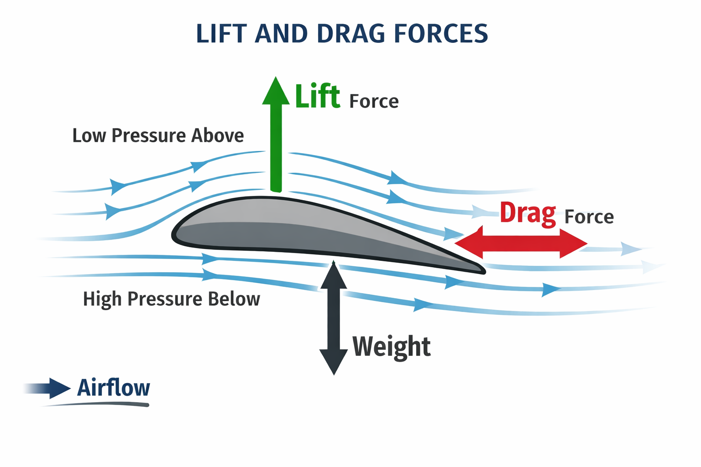
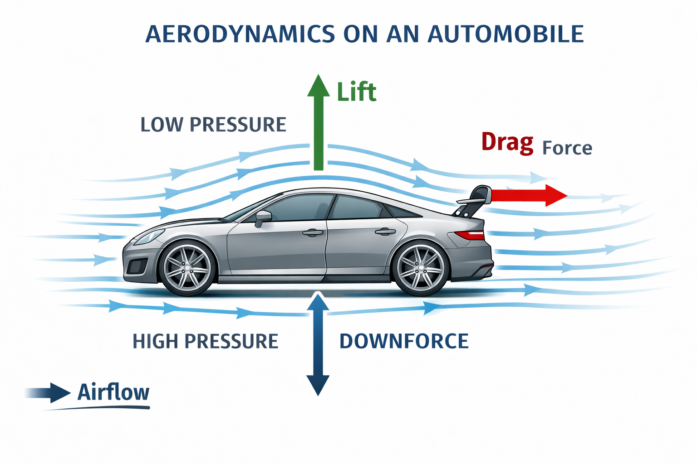
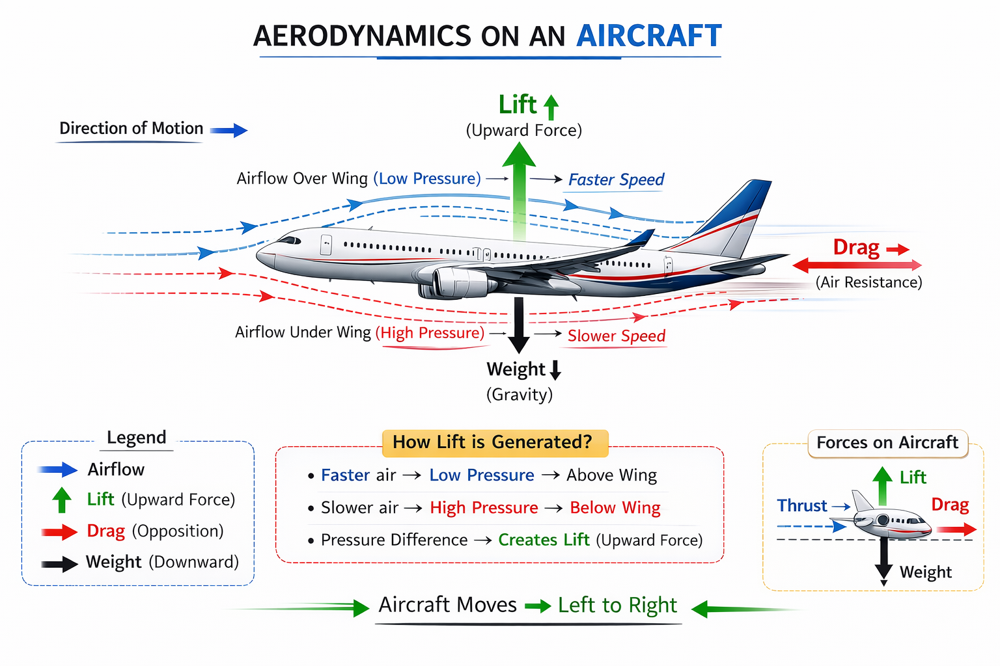

Aerodynamics is the study of how air (a fluid) flows around objects. It relies on fluid dynamics and Newton’s laws to explain lift and drag. Bernoulli’s principle (1738) and Newton’s laws (1687) form the core of aerodynamic theory.
An airfoil (wing) tilted upward deflects airflow downward (pushing the wing up, by Newton’s 3rd law) and causes faster flow over the curved top (lower pressure, by Bernoulli’s principle). These combined pressure and momentum effects generate lift .
Drag is the resistive force of air against motion, which grows roughly with the square of speed.

Understanding of aerodynamics grew slowly over centuries. Early thinkers like Aristotle and Archimedes (2nd–3rd century BC) recognized that fluids (air and water) behave as continuous media, but a quantitative theory awaited modern science.
In 1726 Isaac Newton conducted pioneering air-resistance experiments and formulated his laws of motion.
In 1738 Daniel Bernoulli published the principle relating flow speed and pressure, providing a key explanation for lift.
By the 19th century engineers were testing wings: the first aerodynamic wind tunnel was built in 1871, and researchers like Otto Lilienthal explored glider flight.
Sir George Cayley (1799) identified the four forces of flight (lift, weight, thrust, drag) and built early gliders.
The Wright brothers’ successful powered flight in 1903 validated these principles and ushered in modern aerodynamics.
Over the 20th century, advances (such as Prandtl’s boundary-layer theory) refined our understanding, but Bernoulli and Newton remain the basis of aerodynamic design.
Figure: Wind-tunnel flow visualization (green streamlines) around a model car. Modern cars are shaped to let air flow smoothly, minimizing drag (air resistance).
Designers use streamlined body profiles, smooth underbodies, and tapered rear ends to reduce turbulence.
At the rear, spoilers or diffusers redirect airflow to counteract lift (in effect creating downforce for stability).
For example, a raised rear wing pushes air upward at the back, forcing the car down onto the road for better grip.
Reducing drag directly saves fuel: cutting aerodynamic resistance even a little can significantly improve fuel economy.
Many high-performance cars also use active aerodynamics – movable spoilers, vents or flaps that adjust in real time to driving conditions – to balance low drag on straight roads with added downforce in corners.

Aircraft wings are built as airfoils (curved cross-sections) that generate lift via pressure difference.
Faster airflow over the curved top surface creates lower pressure, while higher pressure under the wing lifts the plane.
Wings often include flaps and slats (movable surfaces) that extend at takeoff/landing to increase wing area and camber, giving extra lift at low speeds.
Large military and transport aircraft also use winglets at the tips to reduce wingtip vortices and drag.
To control the aircraft’s attitude, designers incorporate flight control surfaces: ailerons (on the wing trailing edges) roll the aircraft, elevators (tailplanes) pitch the nose, and the rudder (vertical tail) yaws the aircraft.
By deflecting airflow up or down, each surface changes the pressure distribution on the wing or tail, steering the plane as needed.
These design strategies (airfoil shapes, high-lift devices, and control surfaces) are fine-tuned to maximize lift-to-drag ratio and stability in flight.

Rockets are designed to fly straight at very high speeds, so minimizing drag and ensuring stability are critical.
Their noses use pointed ogive or parabolic shapes that “slice” through air with minimal resistance.
In fact, a blunt or rounded nose that works well at low speed would create huge drag at supersonic speeds; instead, supersonic rockets use sharp cones to reduce shock-wave drag.
The fins at a rocket’s tail act like arrow fletching: they increase drag at the back end so the rocket stays pointed forward (keeping the center of pressure behind the center of mass).
In summary: a slim diameter and tapered nose minimize aerodynamic resistance, while strategically sized fins maintain flight stability.
Supersonic flight also brings shock waves and heating effects, which are major design considerations beyond basic aerodynamics.